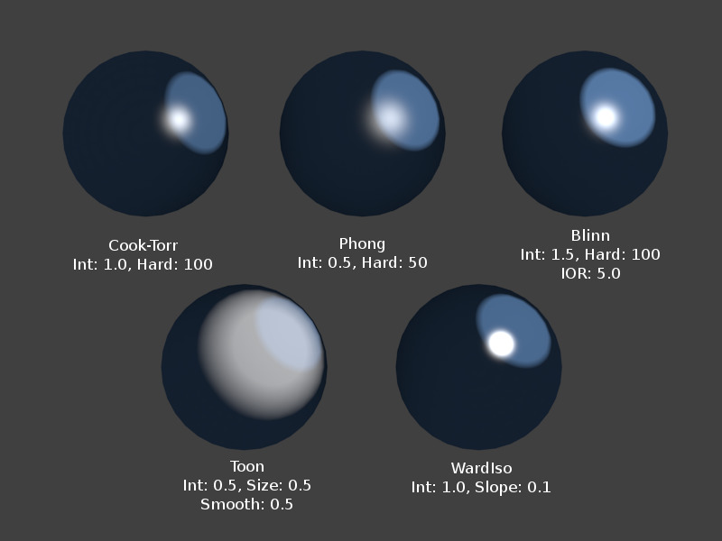

Розсіяні Відтінювачі -- Diffuse Shaders¶
Орієнтир -- Reference
| Mode: | All Modes |
|---|---|
| Panel: |
Розсіяний відтінювач визначає, просто кажучи, загальний колір матеріалу, коли він освітлений світлом. Більшість відтінювачів, призначених для імітації реальності, дають згладжений спад від яскравості до темноти, від точки найбільшої освітленості до затінених областей, але Blender також має інші відтінювачі для різних спеціальних ефектів.
Загальні опції¶
Усі розсіяні відтінювачі мають наступні опції:
- Колір -- Color
- Дає вибрати базовий розсіяний колір матеріалу.
- Інтенсивність -- Intensity
- Яскравіть відтінювача або, точніше, величина енергії падного світла, що фактично розсіяно відбивається у напрямку камери.
- Градієнт -- Ramp
- Дозволяє вам задати діапазон кольорів для Матеріалу та визначає, як цей діапазон варіюється по поверхні. Дивіться детальніше тут -- Color Ramps.
Технічні деталі¶
Світло, що вдаряється об поверхню і далі повторно випромінюється через явище розсіяння, дифузії, буде розсіюватися, тобто повторно випромінюватися у всіх напрямках ізотропно. Це означає, що камера буде бачити таку ж кількість світла з цієї точки поверхні, незалежно від того, яким є падний кут огляду. Це саме та якість, яка робить розсіяне світло незалежним від точки зору. Звичайно, величина світла, що вдаряється об поверхню, залежить від падного кута світла. Якщо більша частина світла, що вдаряється об поверхню, відбивається розсіяно, то така поверхня буде мати матовий вигляд (Світло повторно випромінюється в явищі розсіяння, дифузії).

Світло повторно випромінюється в явищі розсіяння, дифузії.
Mẹo
Імена відтінювачів
Деякі з відтінювачі -- традиційно -- названі на честь людей, котрі вперше ввели моделі, на яких ці відтінювачі базуються.
Ламберт -- Lambert¶
Орієнтир -- Reference
| Mode: | All Modes |
|---|---|
| Panel: |
{kind=link}
Відтінювач «Ламберт» -- Lambert.
Це стандартний розсіяний відтінювач у Blender'і та є доброю загальною універсальною «робочою конячкою» для матеріалів з низьким рівнем блікового відбиття.
- Йоганн Генріх Ламберт -- Johann Heinrich Lambert (1728-1777)
- був швейцарським математиком, фізиком та астрономом, який опублікував роботи про відбиття світла, з яких більш помітна «Закон Бей-Ламберта» -- Beer-Lambert Law, що формулює закон поглинання світла.
Цей відтінювач має лише стандартну опцію, що визначає, наскільки доступним є відбите світло. Стандартне значення 0.8, що дозволяє іншим об'єктам бути яскравішими.
Устави стандартно відтінювача Lambert.
Орен-Наяр -- Oren-Nayar¶
Орієнтир -- Reference
| Mode: | All Modes |
|---|---|
| Panel: |

Відтінювач «Орен-Наяр» -- Oren-Nayar.
Oren-Nayar робить дещо більш «фізичний» підхід до явища розсіяння, дифузії, оскільки враховує величину мікроскопічної шорсткості поверхні. Міхаель Орен -- Michael Oren та Шрі К. Наяр -- Shree K. Nayar розробили модель відбиваності -- reflectance model, на початку 1990-х, яка є узагальненням закону Ламберта, що широко використовується у комп'ютерній графіці.
Опції¶
- Шорсткість -- Roughness
- Шорсткість поверхні, і, звідси, величина дифузного розсіювання.

Устави розсіяного відтінювача Oren-Nayar.
Мульт -- Toon¶
Орієнтир -- Reference
| Mode: | All Modes |
|---|---|
| Panel: |

Відтінювач «Мульт» -- Toon, різні значення бліковості. |

Варіації відтінювача «Мульт». |
Відтінювач «Мульт» -- Toon -- це дуже «не-фізичний» відтінювач, оскільки він не призначений для симуляції реальності, а для продукування мультиплікаційно стилізованого зображування, рендерингу, з чіткими границями між світлом і тінню та однорідно освітленими/затіненими регіонами.
Опції¶
- Розмір -- Size
- Розмір освітленої області.
- Згладження -- Smooth
- М'якість границі між освітленими та затіненими областями.

Устави розсіяного відтінювача Toon.
Міннарт -- Minnaert¶
Орієнтир -- Reference
| Mode: | All Modes |
|---|---|
| Panel: |
Міннарт працює шляхом затемнення частин стандартного відтінювача «Ламберт», так що при значенні 1 устави «Темнота» -- Darkness дає точно такий же результат, як і «Ламберт». Вищі значення темноти будуть затемнювати центр об'єкта (де він вказує у напрямку глядача). Нижчі значення темноти будуть освітлювати краї об'єкта, роблячи його на вигляд схожим на оксамит. Марсель Міннарт -- Marcel Minnaert (1893-1970) був бельгійським астрономом, який цікавився впливами атмосфери на світло та зображення, та у 1954 опублікував книгу під назвою «Світло і колір в природі» -- "The Nature of Light and Color in the Open Air".
Опції¶
- Темнота -- Darkness
- Темнота «освітлених» областей (вищі значення) або темнота країв, що направлених у бік від джерела світла (нижчі значення).

Устави розсіяного відтінювача «Міннарт» -- Minnaert.
Френель -- Fresnel¶
Орієнтир -- Reference
| Mode: | All Modes |
|---|---|
| Panel: |
Різні устави для відтінювача Fresnel, бліковий відтінювач Cook-Torr зі стандартними значеннями його устав Intensity 0.5, Hardness: 50. |

Відтінювач Fresnel, різні значення бліковості. |
З відтінювачем «Френель» -- Fresnel величина розсіяного відбитого світла залежить від падного кута, тобто від напрямку, заданого для джерела світла. Області, направлені прямо у напрямку джерела світла виглядають темнішими; області, перпендикулярні до напрямку світла, стають світлішими. Огюстен Жан Френель -- Augustin-Jean Fresnel (1788-1827) був французьким фізиком, котрий зробив значний внесок у створення теорії хвильової оптики.
Опції¶
- Френель -- Fresnel
- Сила ефекту Френеля, 5.0 -- можливе максимальне значення.
- Фактор -- Factor
- Фактор підмішування ефекту Френеля, 5.0 -- максимально можливе значення.
Устави розсіяного відтінювача Fresnel.
- Емітування -- Emit
- Величина емітування світла відтінювачем.
- Оточення -- Ambient
- Величина глобального кольору оточення, який приймає цей матеріал.
- Півпрозорість -- Translucency
- Величина розсіяного відтінення на зворотному боці.
- Безвідтінково -- Shadeless
- Робить цей матеріал нечутливим до світла або тіні.
- Дотичне Відтінення -- Tangent Shading
Використовує дотичний вектор матеріалу замість нормалі для відтінення -- для анізотропічних ефектів відтінення (наприклад, м'яке волосся або помальований метал).
Xem thêm
Устави для зображування, рендерингу пасма знаходяться на панелі «Пасмо» -- Strand нижче та у вкладці «Частинки» -- Particles для системи частинок.
- Кубічна Інтерполяція -- Cubic Interpolation
- Вмикає використання кубічної інтерполяції для значень розсіяння, для згладженіших переходів між світлими та темними областями.